Vingen
The future of premium horse transport: a trailer concept that balances aerodynamic performance, solo handling and equine wellbeing, in a visual language that moves the brand forward.

- Client
- Umesläp
- Type
- Bachelor thesis, LTU, 2026
- Duration
- 20 weeks at half time, about 400 hours
- Tools
- Autodesk Fusion, Fusion CFD, sketching, 3D printing
The brief
Umesläp builds trucks, trailers and horse trailers for the premium segment, and wanted a vision of where their horse trailers could go next. Today’s trailers work well but look conservative, and loading a horse is physically demanding and stressful for both rider and horse.
- How can a trailer reduce stress and increase safety for the horse?
- How can loading and unloading be made easier, especially alone?
- How can function meet a more modern expression in line with Umesläp’s brand?
The focus was a future vision: usability and form came before production readiness, and scale models and renders replaced a full-size prototype.
Inspiration
The goal was to understand which problem areas exist and what needs and frustrations horse owners have. To get the clearest possible picture, the user was kept at the centre of the process.
Interviews with grooms, riders and trailer sellers, observations of a current trailer and of rider forums, and benchmarking of three premium trailers surfaced six recurring pain points:
“My current trailer has bad air circulation.”
Airflow“The roof collects rain and snow.”
Weather“My horse injures itself on offload.”
Safety“It’s stressful to handle the trailer when I’m alone.”
Handling“My horse can’t walk backwards.”
Loading“I lack control of the environment in the trailer.”
Climate
The benchmark showed that premium trailers share the same basics, from non-slip ramps to tack rooms, but all of them gave little support for handling the trailer alone and let in little light and air.
Ideation
The ideation phase was about broadening the perspective and moving beyond what has already been done. Brainstorming was split into three areas: form, layout and storage, and handling the trailer alone.
Methods: brainstorming, Crazy 8s, SCAMPER and concept evaluation.
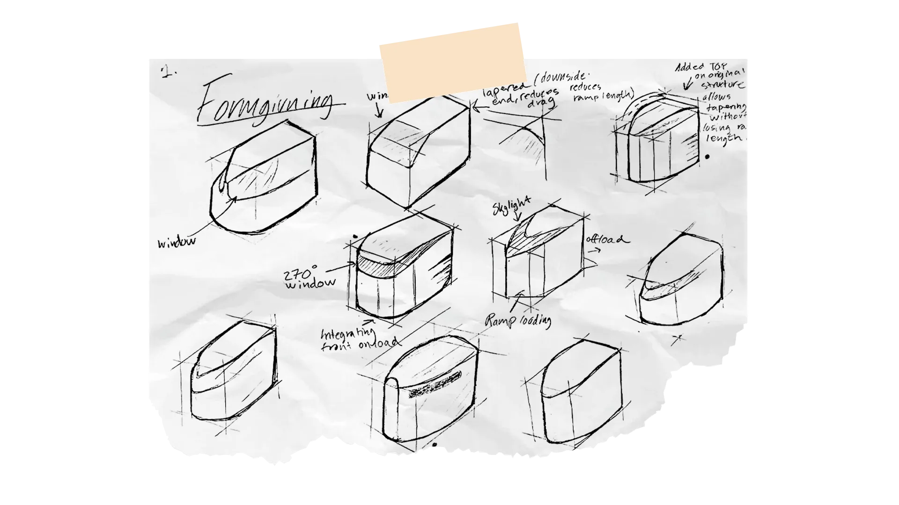
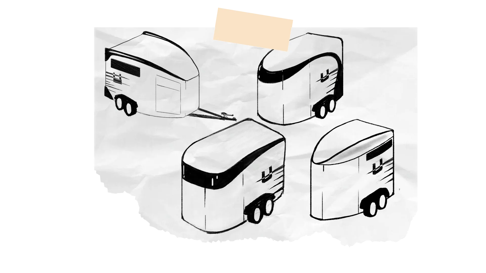
Three concepts
The ideas were combined into three concepts, each solving a different part of the problem, so the strongest parts could later be merged.
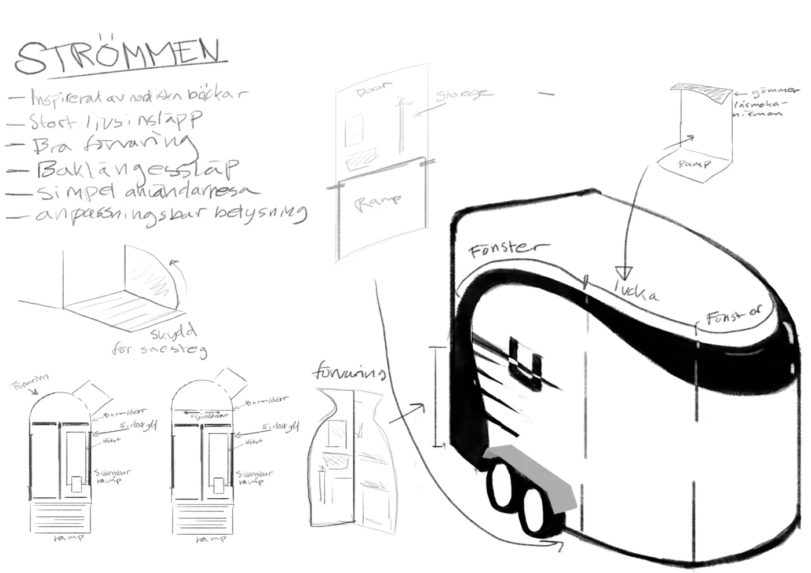
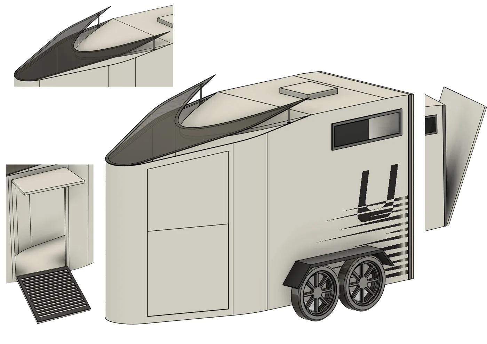
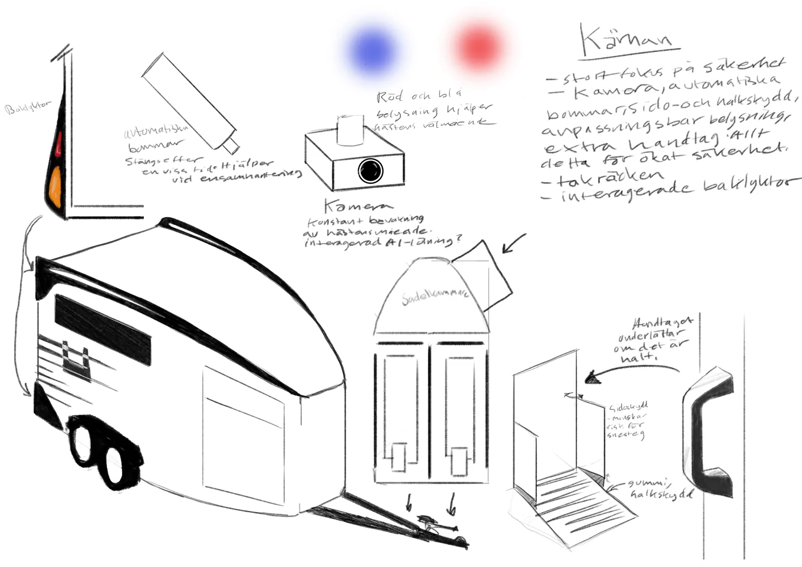
Evaluation
Early form directions were discussed in a workshop with Umesläp. A key insight was the aluminium details that run through their trailers: they are a big part of what makes a trailer recognisably Umesläp.
The three concepts were then scored in a weighted matrix. Vingen came out on top, and the final design builds on it.
| Criterion | Weight | Vingen | Strömmen | Kärnan |
|---|---|---|---|---|
| Safety | 3 | 2 | 2 | 3 |
| Form language | 3 | 3 | 2 | 1 |
| Airflow | 2 | 3 | 1 | 1 |
| Storage | 1 | 1 | 3 | 1 |
| Daylight | 1 | 3 | 2 | 2 |
| Aerodynamics | 1 | 2 | 3 | 2 |
| Weighted total | 27 | 22 | 19 |
Iteration
The final concept was compiled from the user needs combined with the results of the concept evaluation. In this phase the final CAD model, renderings and animations were completed for delivery.
Autodesk Fusion CFD was used as a virtual wind tunnel, on the trailer alone and behind a towing car. To judge what drag means for fuel use, it was set against rolling resistance, based on Umesläp’s B50 (890 kg kerb weight, up to 1510 kg load). Iterating step by step led to a noticeably more aerodynamic shape.
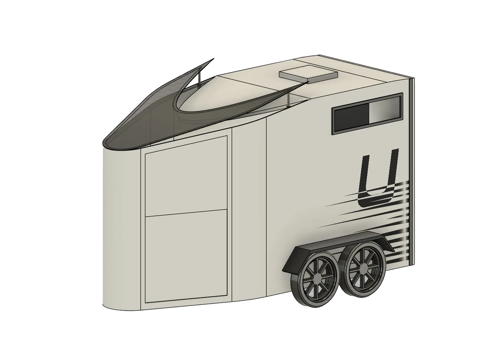
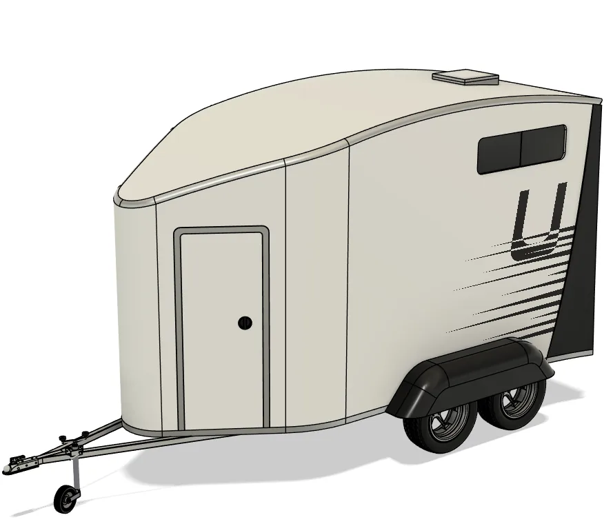
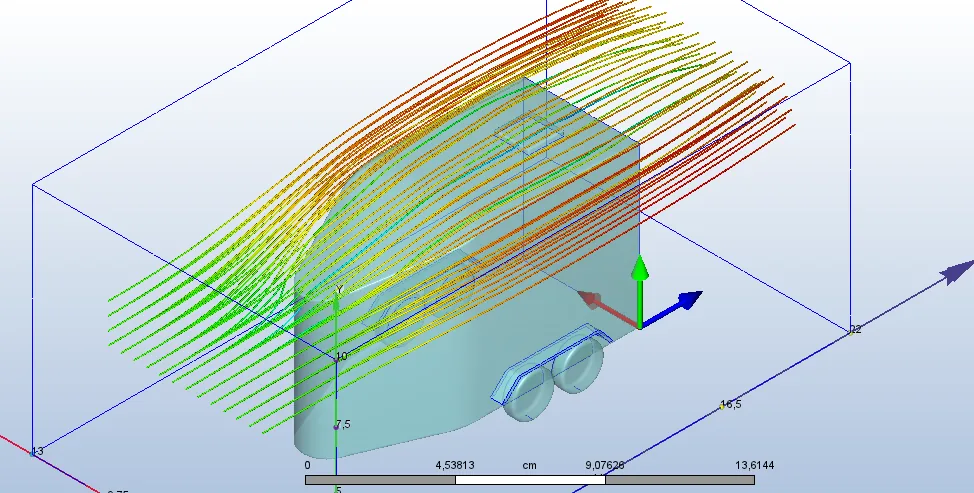
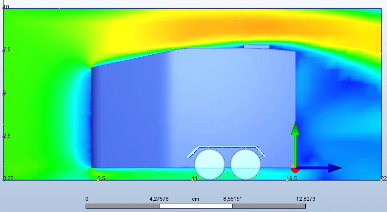
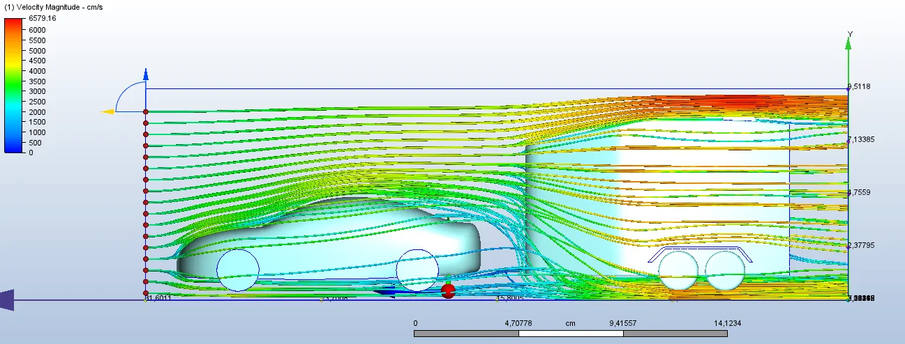
The final concept
Vingen keeps the overall proportions of Umesläp’s current trailers, so the production chain would not need to change much. What it adds:
- An opening roof hatch that lets in daylight and air, so a freshly washed horse dries and the air stays fresh
- Opening windows and AC ventilation for control over the climate inside
- An aluminium frame on the rear edge, carrying Umesläp’s aluminium details forward
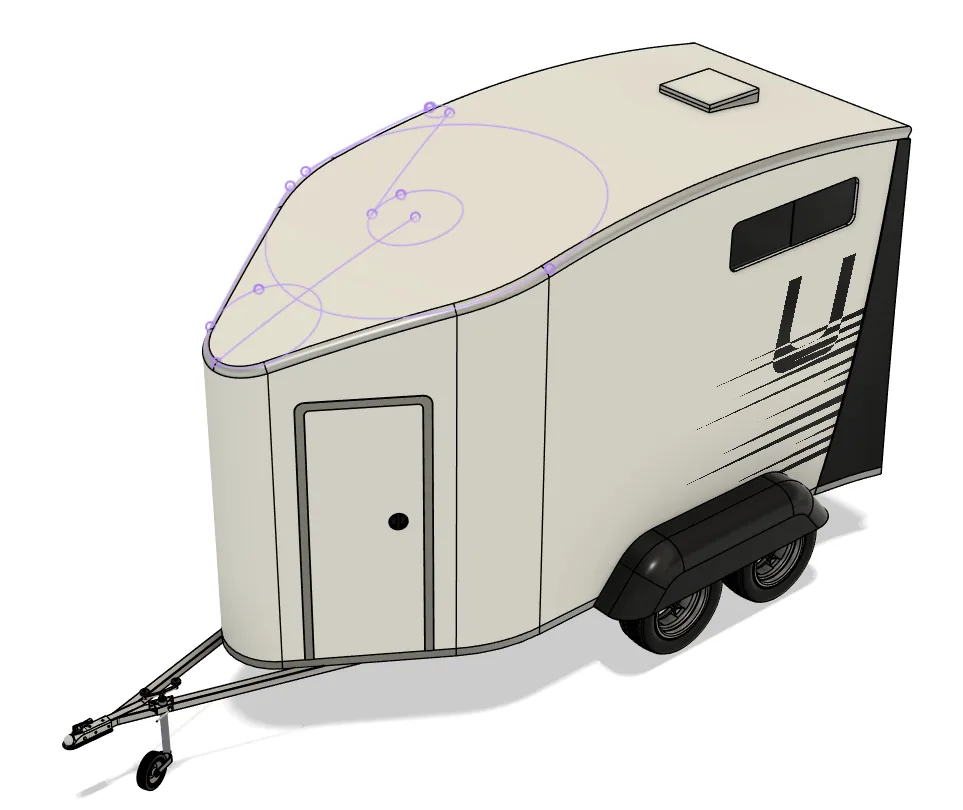
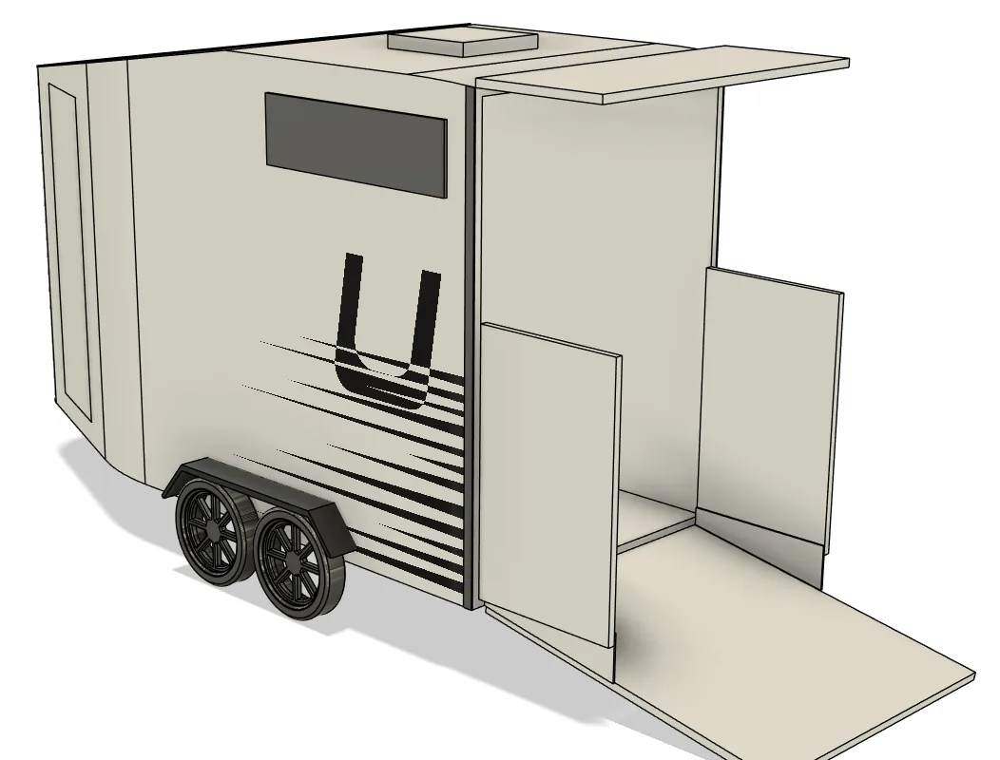
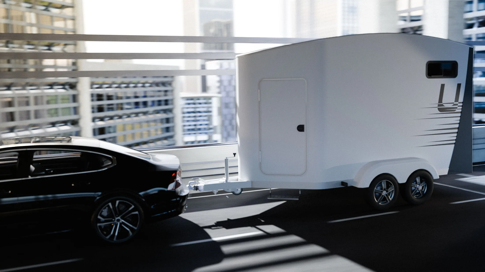
Normada
Next project